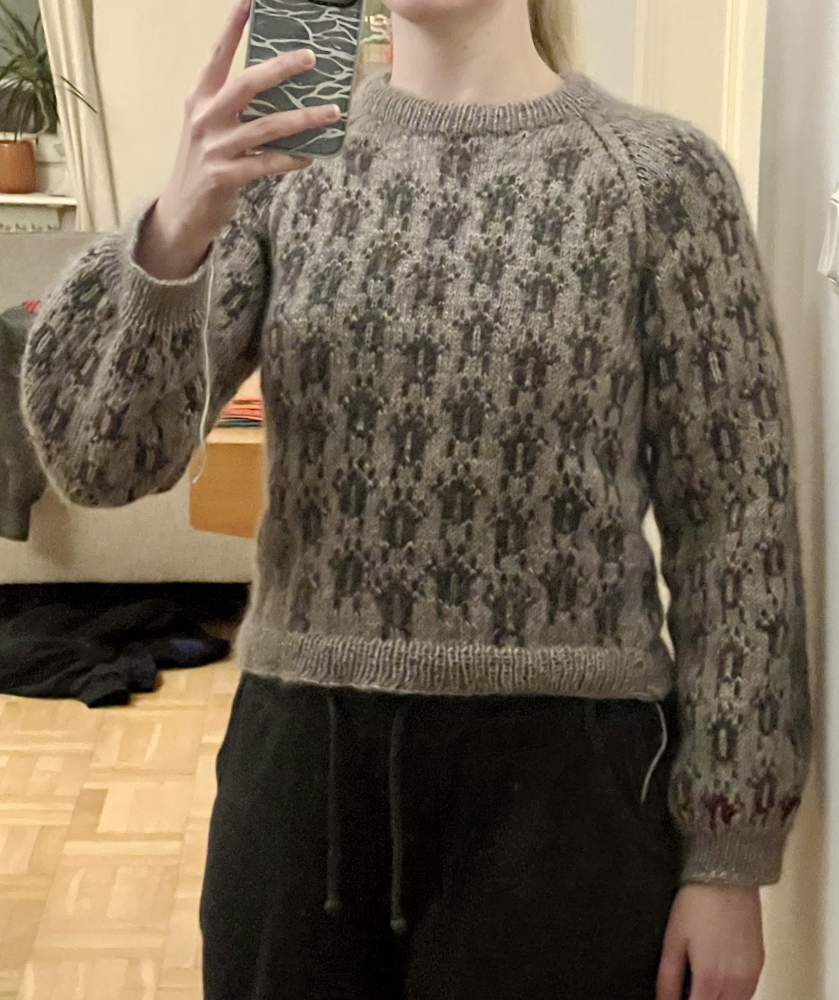
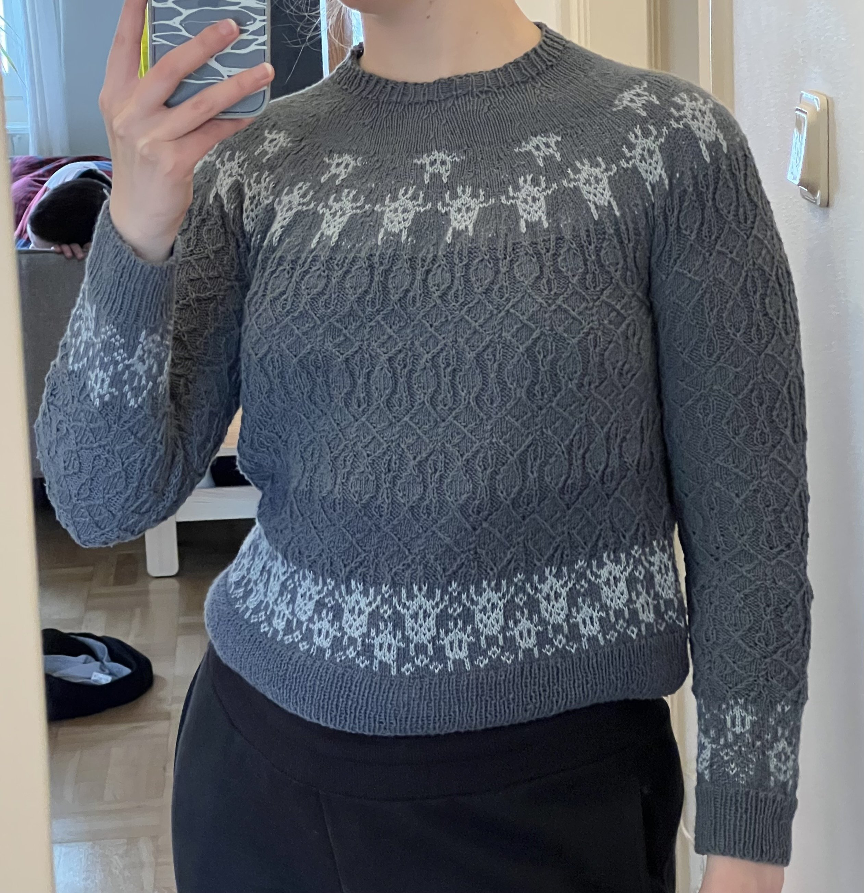
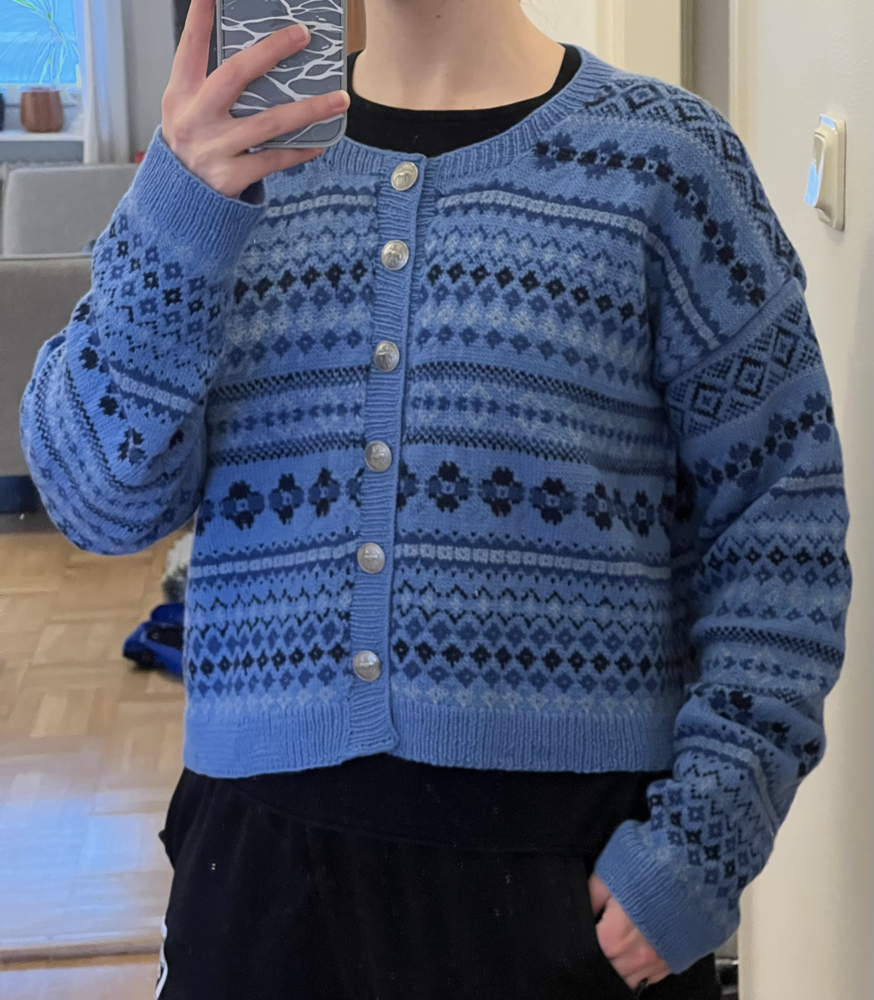
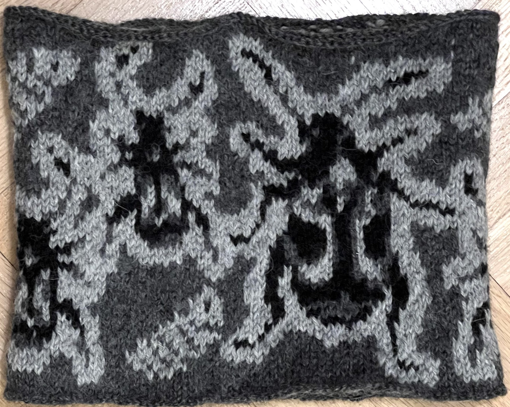
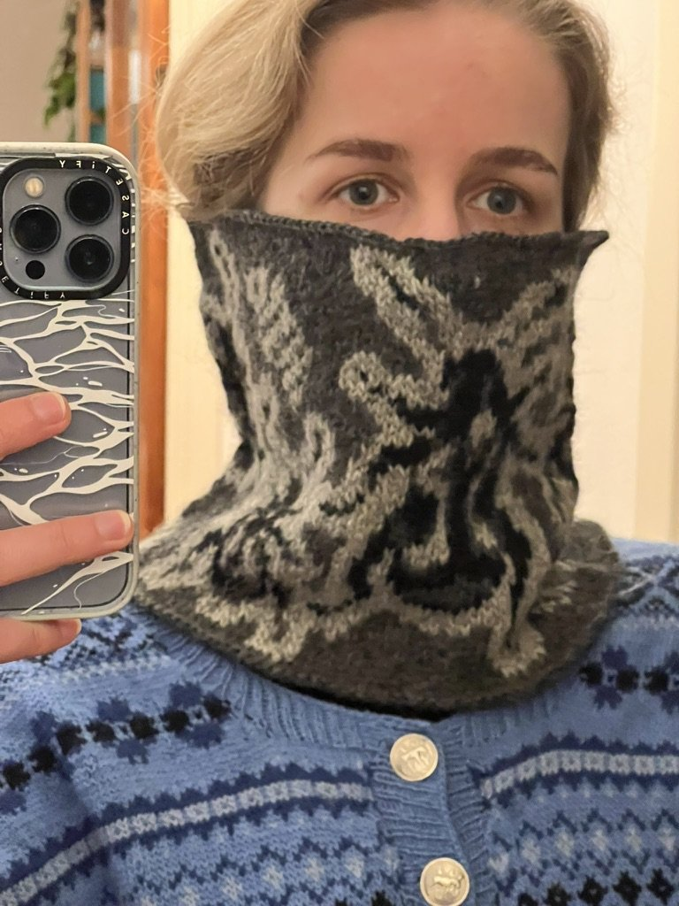
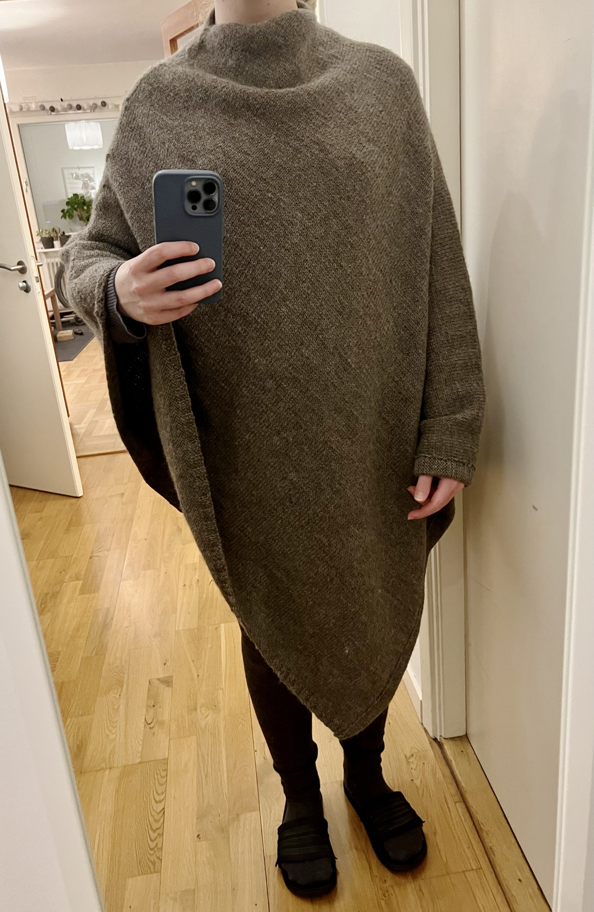
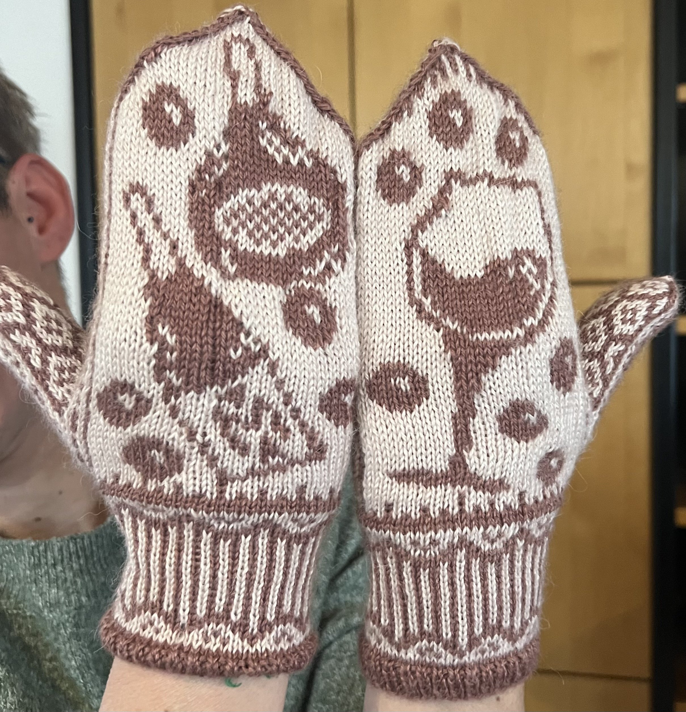
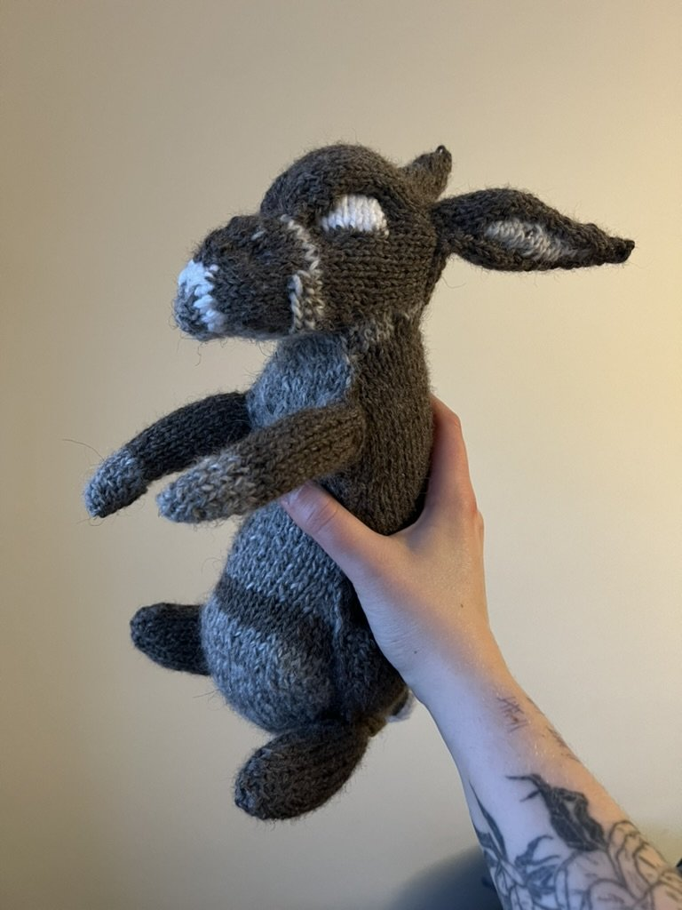

Beetle Sweater (wool)
The base sweater pattern is a raglan from petiteknit (Monday sweater), and I originally created the repeating color chart in excel myself, you can download it here. I used tynn peer gynt from sandnes garn in a light brown for the body, and a dark brown for the beetles. I also used a mohair in kind of a medium brown shade for both colors, and for reasons I cannot remember I didn't do the sensible thing to attach a separate strand of mohair to each color, but instead I only switched the wool color and switched the same strand of mohair between them at each color change. This was stupid and sucked to do, and there was no point. In addition, I miscounted some stitches when casting on the neckline, so the yolk is pretty small, making it kind of tight under the armpits. Still wearable, but essentially zero ease.
I promise I finished weaving in the ends after taking this picture. It is also not blocked here, but I didn't stretch it so it looks about the same.
Beetle Sweater (linen)
The base pattern for this is from marie wallin, the maida sweater from the cherish collection. I exchanged the color work from the pattern for a beetle color chart I designed myself. I also didn't knit it with the 3.25mm needles the pattern calls for, but with the 3mm needles I had on hand, so the sizing is kind of out of the window. I also didn't stop increasing the sleeves when the pattern calls for it, but I continued increasing every 6 rows until they had the final length, and even that has essentially zero ease, next time i would increase even more. The pattern is intended to have sleeves that stop shortly above the wrist, and this is how mine came out also, but next time I would add another pattern repeat to the sleeves to make them longer. Due to my different color chart in the yolk, I didn't do the decreases according to the pattern but just my own whenever I felt like it. I also added some short rows around the back neck that were not included in the originala pattern. In total, with all this fuckery I am surprised how well this sweater fits.
I used the tynn linne yarn from sandnes garn, which is a cotton/linen blend that I found very nice to work with. I used a dark cold grey for the body and a very light cold grey for the beetles. Due to some impatience on my side I started with a ball from a different dark grey color batch than all the rest, which is unfortunately a pretty substantial difference in this case. I decided i don't care I'm not frogging this entire thing because of that.
Blue Cardigan
This cardigan is the betha cardigan from the cerish collection by marie wallin. I again used 3mm needles instead of the 3.25 the pattern calls for and knit a size L instead of M to compensate for that, and this worked out pretty well. I found vintage metal buttons with elk on them that I used here, but since there were only six I had to reduce the number of buttonholes from the pattern. I also lowered the neckline in the front, and used a non-stretchy bind of, which was a good choice in my opinion.
I used merino wool yarn from sandnes garn, which is fees nice and soft, but unfortunately is very prone to pilling.
Beetle Cowl
Designed by me and knitted with Sandnes Garn Peer Gynt yarn, very warm and wind-proof, perfect for winter biking. I made a pattern with the color chart and instructions, download it here! The beetles are Callosobruchus maculatus females (large), males (small) and larvae.
 Giant Poncho
One of the first things I ever made was this giant poncho, and I love it. It wasn't intended to be this big, but when I planned the pattern, I measured the length of the sides from my neck down to my wrists instead of the elbow, so now it's giant. It's all stockinette stitch except the 2x2 ribbing on one site, and it took like 18 balls of yarn, I used Peer Gynt from Sandnes Garn. I folded the neck in when blocking so that looks much neater than the picture. it is a little asymmetrical because I got impatient, and I tried to make it a little bit more symmetrical by folding the long side over.
Songbird Mittens
These are the songbird mittens from erica heusser designs, I followed the pattern exactly, no weird sizing buisness. The thumbs are a little too low (or the finger-part is too long), so if i make them again I might try to raise the thumb opening by like 2 cm. TODO take a picture
Pink Wine Mittens
These were a christmas present for my mom in 2023. They are made from merino silk yarn from sandnes garn. I designed the color work myself, and the base mittens are the songbird mittens from erica heusser designs. I used 2.5mm needles instead of 2.75 like the pattern recommends to make them a little smaller, and they fit my mom great.
Blue Hood
The Hilly Hood by Anne Ventzel. The original has a broken rib pattern, but I used Peer Gynt yarn by Sandnes Garn, and that was a bit too heavy for that, and the pattern didn't look good, so i made it in stockinette. That worked out great, because it is thinner and fits under a bike helmet like that. I also did some decreases around the chin in the ribbing around the face to make sure that it doesn't flop forward. TODO take picture
HIM
What species is he? You know the answer in your heart.